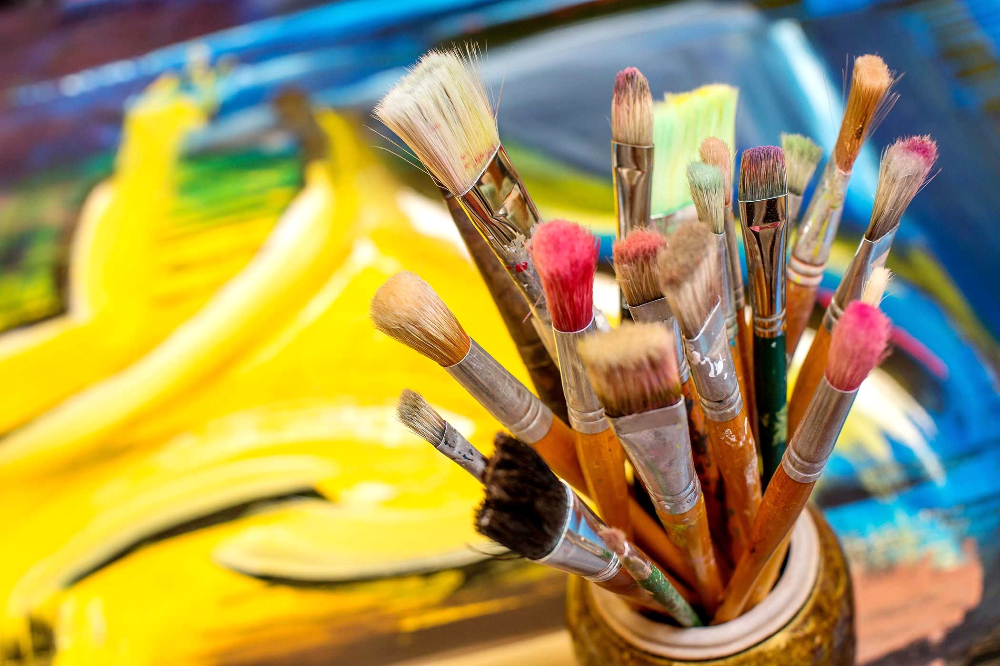

Arts
Art is a broad and complex concept that can have different meanings and interpretations depending on the context and perspective. One possible way to define art is as the expression or application of human creative skill and imagination, typically in a visual form such as painting or sculpture, producing works to be appreciated primarily for their beauty or emotional power.
Art is a term that can refer to several things. It can be a study of a creative skill, a process of using the creative skill, a product of the creative skill, or the audience's experience with the creative skill. Art can be expressed in various forms such as painting, sculpture, music, literature, dance, and more. It is often created to be appreciated primarily for its beauty or emotional power.

The definition and perceived value of works of art have changed throughout history and in different cultures. In the West, by the mid-18th century, academies for painting and sculpture established a sense that these media were "art" and therefore separate from more utilitarian media. This separation of art forms continued among art institutions until the late 20th century when such rigid distinctions began to be questioned.
Art is something that stimulates an individual's thoughts, emotions, beliefs, or ideas through the senses. Works of art can be explicitly made for this purpose or interpreted on the basis of images or objects. Art is not just for intellectuals or artsy people; it is for anyone who wants to experience it.
Learn More with JSH
Leaders characteristics
{kind=link}